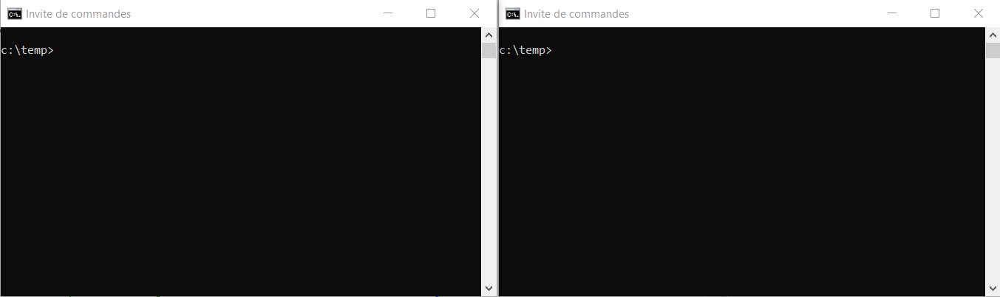
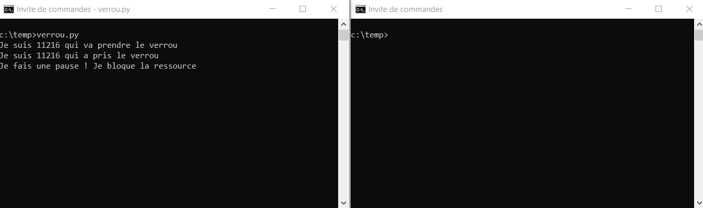
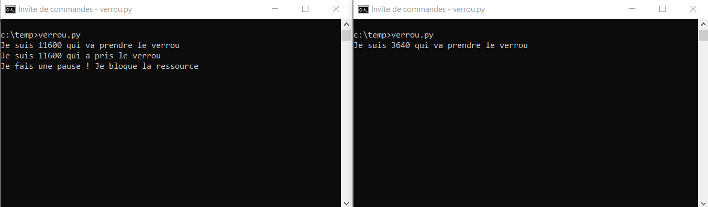
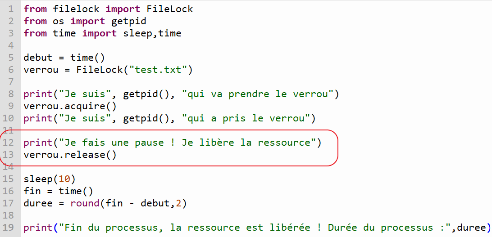
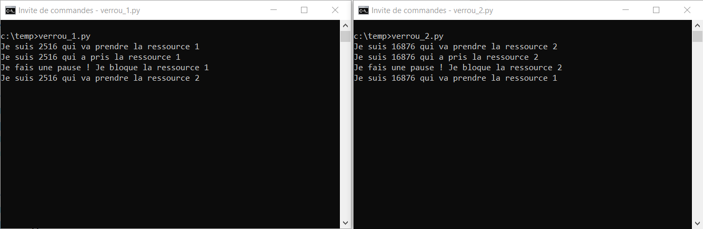
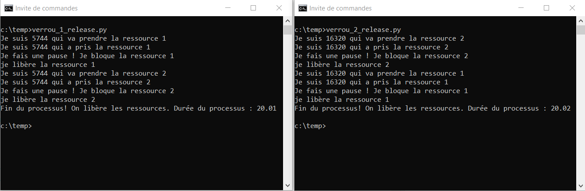

Le temps de latence est le délai entre la création d’un processus et le début de son exécution.
le temps CPU est le temps total durant lequel le processeur exécute le processus.
le temps réel écoulé est le délai entre la création d’un processus et sa terminaison.
A. Ordonnancement FIFO
L’ordonnancement FIFO est non préemptif. Cela implique qu’un processus élu s’exécute jusqu’à la fin. Les autres processus sont à l’état prêt. Les processus sont élus dans l’ordre de leur arrivée. Un processus est caractérisé par sa date de création \(t_{0}\) et sa durée \(d\).
Soient les processus PA, PB et PC de dates de création respectives 0, 4 et 6 et de durée respectives 6, 12 et 6.
Déterminer pour chacun des temps \(t\) de 0 à 24 le processus actif. Il est possible de présenter le résultat sous forme de chronogramme.
Quel est le temps de latence de chacun des processus ?
Quel est le temps CPU de chacun des processus ?
Quel est le temps réel écoulé pour chacun des processus ?
B. Ordonnancement préemptif
On suppose maintenant un ordonnancement préemptif. La durée q du quantum est fixée à 2 unités de temps. Parmi l’ensemble des processus prêts, le système choisit celui qui n’a pas été exécuté depuis le plus longtemps.
On reprend les processus PA, PB et PC de la partie précédente.
Déterminer pour chacun des temps \(t\) de 0 à 24 le processus actif. Il est possible de présenter le résultat
sous forme de chronogramme.
Quel est le temps de latence de chacun des processus ?
Quel est le temps CPU de chacun des processus ?
Quel est le temps réel écoulé pour chacun des processus ?
Un programme Python nommé pgm.py qui est exécuté sur la machine est associé à 2 processus:
Un processus pour le programme python pgm.py;
Un processus pour l’interpréteur (console) python qui exécute le programme.
En Python, le module os dispose de fonctions qui permettent d’obtenir des informations système.
La fonction getpid() renvoie le PID du programme Python exécuté;
La fonction getppid() renvoie le PPID du processus parent;
La fonction kill(pid,0) arrête le processus dont le PID est pid.
Note
Pour disposer des fonctions ci-dessus du module os, il est nécessaire des les importer dans le programme Python avec la commande:
fromosimportgetpid,getppid,kill
Quel est le lien entre les 2 processus créés lors de l’exécution d’un programme Python?
Créer avec l’application thonny un fichier pid.py et importer les 3 fonctions du module os ci-dessus.
Compléter votre programme avec les 2 instructions suivantes:
mon_pid=getpid()print("je suis",mon_pid)
Exécuter ce programme et vérifier le PID dans le gestionnaire des tâches.
Compléter le programme précédent pour afficher le PID du processus parent. On utilisera la variable parent_pid pour stocker le PPID et on modifiera le message de l’affichage en « mon parent est ».
On peut exécuter notre programme Python pid.py en utilisant une ligne de commande saisie dans la fenêtre de commande.
Vérifier que le fichier pid.py est associé au programme python (idle) et non thonny.
Exécuter la commande pid.py dans la fenêtre de commande et vérifier que le code s’exécute bien.
La commande pid.py lance 2 processus associés au programme et à l’interpréteur. Quel est le processus parent de ces 2 processus ? Quel est son PPID ?
Indication
L’exécution du programme pid.py est très rapide. Pour se donner le temps de voir et noter les PID des processus, il est conseillé de mettre une pause avec la commande Python sleep(10) du module time.
Un programme peut être lancé plusieurs fois. Pour cela, on sépare les noms des programmes par le symbole &. La commande à saisir pour lancer 2 fois notre programme est donc pid.py&pid.py.
Ajouter à la fin du code du programme pid.py une instruction d’affichage « fin de processus ».
Saisir dans la fenêtre de commande une instruction pour exécuter 2 fois le programme pid.py.
Un processus peut être arrêté alors qu’il est en cours d’exécution. La commande kill(pid,0) met fin au processus dont on passe le PID en paramètre.
Ajouter un arrêt du processus dont le PID est stocké dans la variable mon_pid.
Ajouter un arrêt du processus dont le PID est stocké dans la variable parent_pid.
Ajouter un arrêt du processus dont le PID est le PID de la fenêtre de commande CMD puis lancer le programme depuis cette fenêtre de commande.
Un programme qui a besoin d’une ressource (fichier) peut en disposer si cette ressource est disponible. Deux cas peuvent se présenter:
La ressource est disponible et le processus élu se poursuit en utilisant cette ressource.
La ressource n’est pas disponible et alors le processus passe à l’état bloqué. Lorsque la ressource devient disponible, il passe à l’état prêt puis poursuit son exécution en passant à l’état élu et dispose de la ressource.
Un processus accède à une ressource en mettant un verrou, empéchant les autres processus d’y accéder.
En Python, le module filelock permet d’appliquer un verrou sur une ressource.
On donne le code suivant en Python:
1fromfilelockimportFileLock 2fromosimportgetpid 3fromtimeimportsleep,time 4 5debut=time() 6verrou=FileLock("test.txt") 7 8print("Je suis",getpid(),"qui va prendre le verrou") 9verrou.acquire()10print("Je suis",getpid(),"qui a pris le verrou")1112print("Je fais une pause ! Je bloque la ressource")13sleep(20)1415fin=time()16duree=round(fin-debut,2)1718print("Fin du processus, la ressource est libérée ! Durée du processus :",duree)
Prudence
La ressource test.txt doit exister pour que le code soit exécutable ! Si elle manque, ajouter un fichier test.txt même vide.
Que signifie l’instruction verrou=FileLock("test.txt") ?
Que signifie l’instruction en ligne verrou.acquire() ?
Avec le logiciel Thonny, recopier ce code dans un fichier Python nommé verrou.py puis exécuter le. Le code s’exécute-t-il correctement ?
Avertissement
Il est possible que le module filelock ne soit pas installé. Dans ce cas, ajouter le paquet filelock en passant par « Outils -> Gérer les paquets… », recherche sur filelock puis installer.
Exécuter le code dans une fenêtre de commande cmd.
Avertissement
Il est possible que le module filelock ne soit pas installé sur la version Python de la machine. On peut utiliser l’interpréteur Python de Thonny. Pour cela, vous devez ajouter en première ligne de votre programme l’instruction ci-dessous.
#! "C:\Program Files (x86)\Thonny\python.exe"
On va exécuter le programme verrou.py dans 2 fenêtres de commande séparées.
Ouvrir 2 fenêtres de commande l’une à côté de l’autre.

Dans une fenêtre de commande, lancer l’exécution du script verrou.py.

Dans l’autre fenêtre de commande, lancer aussi l’exécution du script verrou.py.

Que remarquez-vous ?
Pour que le script puisse s’exécuter une seconde fois sans erreur, il est nécessaire de rendre disponible la ressource. La fonction release() libère un verrou.
Ajouter l’instruction verrou.release() juste avant la pause du programme puis enregistrer votre code.

Relancer les 2 programmes en parallèle et contrôler que le second n’est plus bloqué.
On donne les fichiers verrou_1.py et verrou_2.py en Python. On lance les programmes en parallèle dans 2 fenêtres d’invite de commandes.

Que se passe-t-il ? Comment l’expliquer ? Comment résoudre ce problème ?
La méthode release() du module firelock libère les ressources qui ont un verrou.
# On verrouille une ressource !>>>verrou.acquire()# On libère la ressource>>>verrou.release()
Ajouter des instructions dans les fichiers verrou_1.py et verrou_2.py de sorte que les programmes se terminent chacun correctement ! On ajoutera des messages pour vérifier le déroulement.

Créer un fichier verrou_3.py pour réaliser un interblocage entre les trois fichiers utilisant 3 ressources différentes.